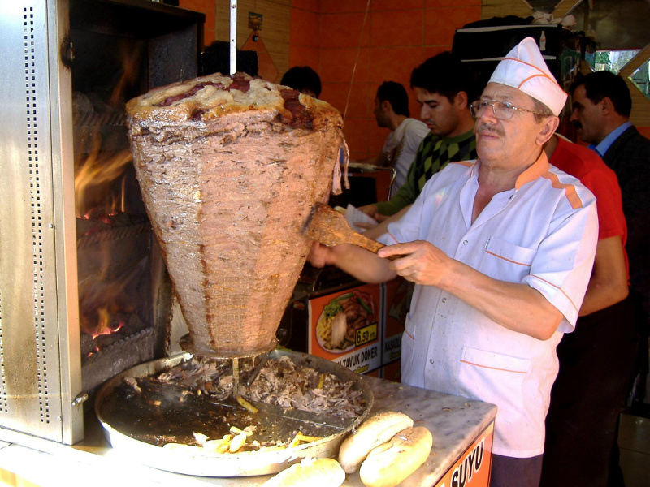
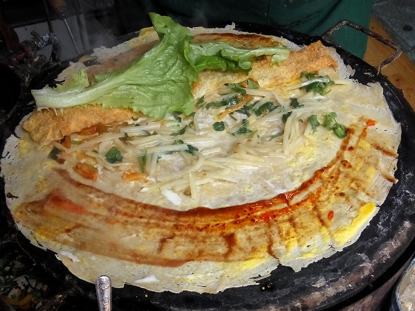

Eating Journal
Good things to eat and where to find them
09/06/2018: Idli
Idlis are a favorite in India. They are made from a lentil and rice batter that is steamed.
In India these are very cheap . . unfortunately, they will cost you in Toronto.

If you like Indian food, check out Karaikudi in Scarborough.
08/24/2018: Pide
If you haven't tried Pide , also known as Turkish Pizza, your
life is not complete.

My current favorite Pide Restaurant, is Mr. Pide in Greektown, Toronto.
Order the Lahmacun !
08/22/2018: Shawarma
One of the many excellent Middle Eastern foods you can find in Toronto -- Shawarma!

If you like shawarma, check out Ali Baba's. They have two for the price of
one falafel sandwiches on Tuesdays!
07/10/2018: Jianbing
Jianbing is a street food from China. It is very popular as a breakfast food.

Unfortunately, I haven't found a good restaturant in Toronto that has jianbing. But
here is a nice video showing it being made in Beijing link.